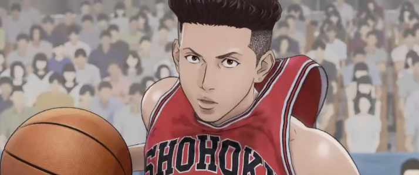
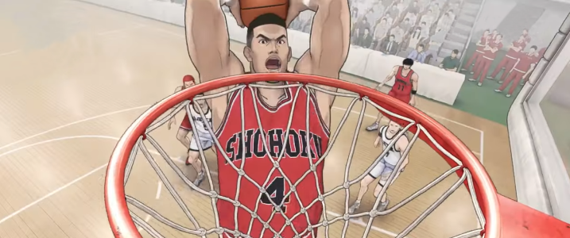

Character
-
- Year 3 / Shooting Guard / 184cm (6'0")
- Mitsui was the MVP of his junior high school team. He gets frustrated and leaves the team for a while, but eventually he returns as a three-pointer specialist.
- Shooting Guard
- Hisashi
Mitsui
-
- Year 1 / Power Forward / 188 cm(6'3")
- Sakuragi is a freshman who never played basketball prior to high school. He has distinctive red hair. He sees Rukawa as his rival, but the feeling is not mutual.
- Power Forward
- Hanamichi
Sakuragi
-
- Year 2 / Point Guard / 168cm (5'6")
- Miyagi is known as “Shohoku’s Speedster” because of how speedy he is despite his short stature. He has a crush on Ayako, the team manager.
- Point Guard
- Ryota
Miyagi

-
- Year 1 / Small Forward / 187cm (6'2")
- Rukawa is a rookie and the team’s freshman star. He is quiet and cool.
- Small Forward
- Kaede
Rukawa
-
- Year 3 / Center / 197 cm(6'5")
- Akagi is team captain. His goal is to win the national championship. Sakuragi calls him by the nickname “Gori (Gorilla).”
- Center
- Takenori
Akagi

TOP